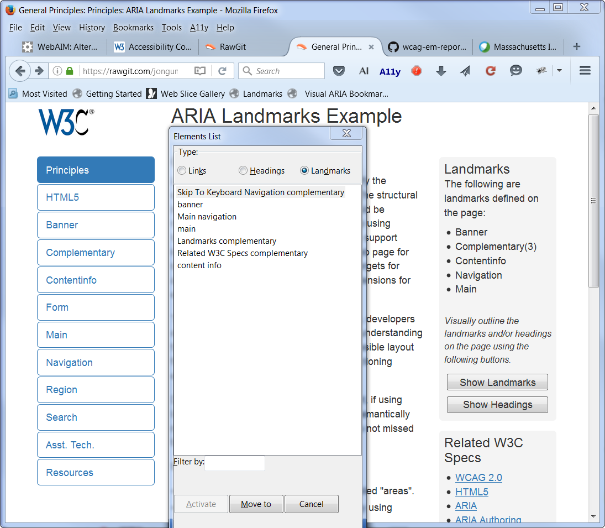
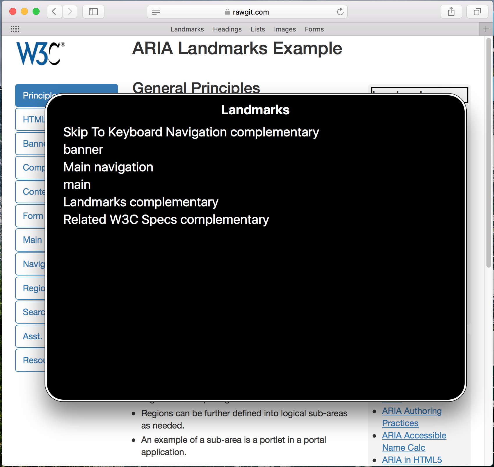

보조 기술
다음 섹션에서는 다양한 인기 보조 기술들이 랜드마크 탐색을 지원하는 방법을 보여줍니다.
윈도우용 JAWS 스크린 리더
다음 명령어는 JAWS 스크린 리더에서 (15 버전 이후) 랜드마크를 탐색하는데 사용 가능합니다:
| 명령어 | 행동 |
|---|---|
| Q | main 랜드마크로 이동 |
| R | 다음 랜드마크로 이동 |
| Shift+R | 이전 랜드마크로 이동 |
| Insert+Control+R | 랜드마크 목록 |
JAWS의 랜드마크 목록 스크린샷

윈도우용 NVDA 스크린 리더
다음 명령어는 NVDA 스크린 리더에서 (2014.02 버전 이후) 랜드마크를 탐색하는데 사용 가능합니다:
| 명령어 | 행동 |
|---|---|
| D | 다음 랜드마크로 이동 |
| Shift+D | 이전 랜드마크로 이동 |
| NVDA+F7 | 랜드마크 목록 |
NVDA의 랜드마크 목록 스크린 샷

MacOS용 보이스오버 스크린 리더
다음 명령어는 보이스오버 스크린리더에서 랜드마크를 탐색하는데 사용 가능합니다:
| 명령어 | 행동 |
|---|---|
| W (빠른 탐색) | 다음 랜드마크로 이동 |
| Shift+W (빠른 탐색) | 이전 랜드마크로 이동 |
| Control+Option+U, 누른 후 랜드마크 목록으로 왼쪽 또는 오른쪽 방향키 | 랜드마크 목록 |
보이스오버의 랜드마크 목록 스크린 샷

Linux/GNOME용 ORCA 스크린 리더
다음 명령어는 ORCA 스크린 리더에서 랜드마크를 탐색하는데 사용 가능합니다:
| 명령어 | 행동 |
|---|---|
| M | 다음 랜드마크 |
| Shift+M | 이전 랜드마크 |
| Alt+Shift+M | 랜드마크 목록 |